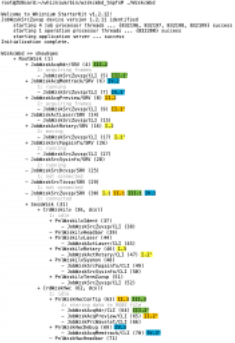

Mastering the Job Tree (KB20)
Published: official date pending
Highlights key concepts of the run-time job hierarchy including calls and dispatches.
Categories: WhizniumSBE, Whiznium CV Demonstrator
Model and source code file pointers: in [2] _mdl/IexWznm{Job, Jtr}_wzsk.xlsx, wzskcmbd/Wzskcmbd.{h, cpp}, wzskcmbd/gbl/JobWzsk{SrcZuvsp, ActRotary}.{h, cpp}
At this point, the CPU-side concept of the job tree should be introduced. Any Embedded System development mandates clearly defined software responsibilities for control and observation of hardware features. WhizniumSBE encourages splitting functionality into a fine-grained hierarchy of jobs, with each job resulting in a dedicated C++ class and source code file, exemplified for the CV demonstrator project in Figure 9. Super jobs #include their sub-jobs and can access their functionality directly. In addition, sophisticated thread-safe inter-job call passing is part of every WhizniumSBE-backed design.

Figure 1: CV demonstrator runtime job tree (slightly shortened) with jobs relevant for examples I-IV highlighted in color; stages in gray for jobs with attached state machines
According to the above, on the one hand each hardware-controlling job should exist only once in controlling fashion, while on the other hand there can be multiple super-jobs requiring their functionality as sub-jobs. This contradiction is resolved by instantiating each hardware-controlling job once in server mode and multiple times in client mode – this is denoted as /SRV and /CLI, respectively, in Figure 9. Only the server instance actively performs operations on hardware, for example by holding file descriptors and allocated memory while relaying requests and results to client instances.
FPGA subsystem access is achieved, for the AMD MPSoC variant of the CV demonstrator, by instantiating the job JobWzskSrcZuvsp. It funnels all command invocations and buffer transfers through a single character device, /dev/dbeaxilite0. To allow mutually independent super-jobs, such as JobWzskActLaser for line laser control and JobWzskActRotary for turntable control, to gain access to only a portion of the FPGA subsystem, the concept of claims is implemented, along with thread-safe handling methods. With it, at any given time, exactly one super-job can claim controlling access of either of the domains corner/decim/hdreng/laser/step/trace/*track. In an alternative implementation, multiple WhizniumDBE-backed IP cores, one for each domain, could be attached to the system.
Also visible in Figure 9 are web UI session related jobs, which can be present multiple times in the job tree and which are not subject to the server / client construct of hardware control jobs. Specifically, under the user session SessWzsk (31), handler jobs for cards – each card corresponds to one browser tab in the web UI – and panels are listed.
Returning to Example I, a user-commanded turntable movement (see top left of Figure 10), is implemented via the job tree path PnlWzskLlvRotary – JobWzskActRotary – JobWzskSrcZuvsp, where JobWzskActRotary controls the move operation with the help of an attached state machine: it first issues a moveto() command to the FPGA subsystem via JobWzskSrcZuvsp and then receives periodical wakeup calls at which it tracks the progress, using polling and getInfo(), until done. JobWzskActRotary also serves as hardware abstraction layer (HAL): depending on the CV demonstrator hardware configured, it instantiates JobWzskSrcDcvsp (Microchip PolarFire SoC) or JobWzskSrcTivsp (Efinix Titanium), instead of JobWzskSrcZuvsp (AMD MPSoC), without changing the API towards its super-jobs.